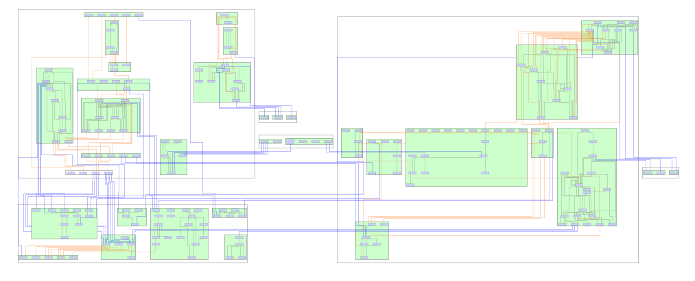
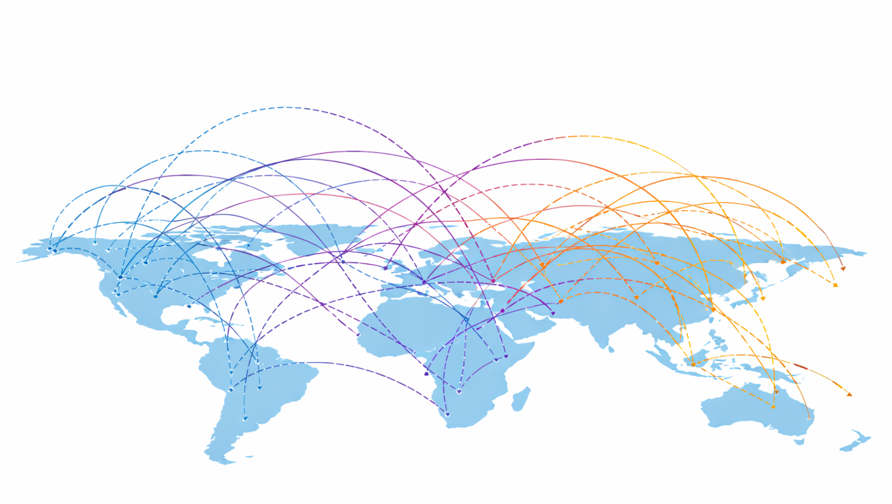
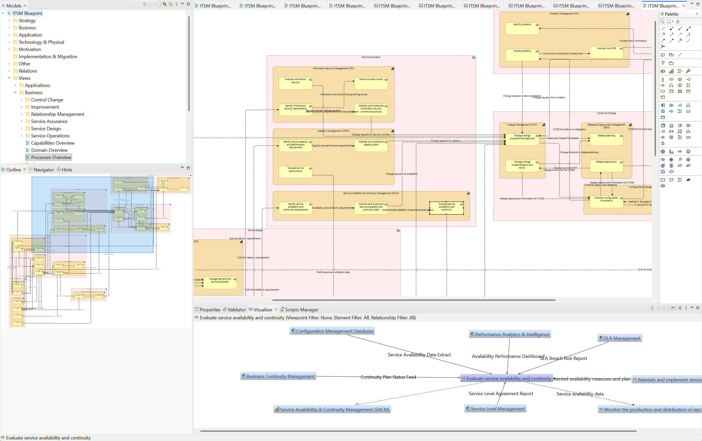
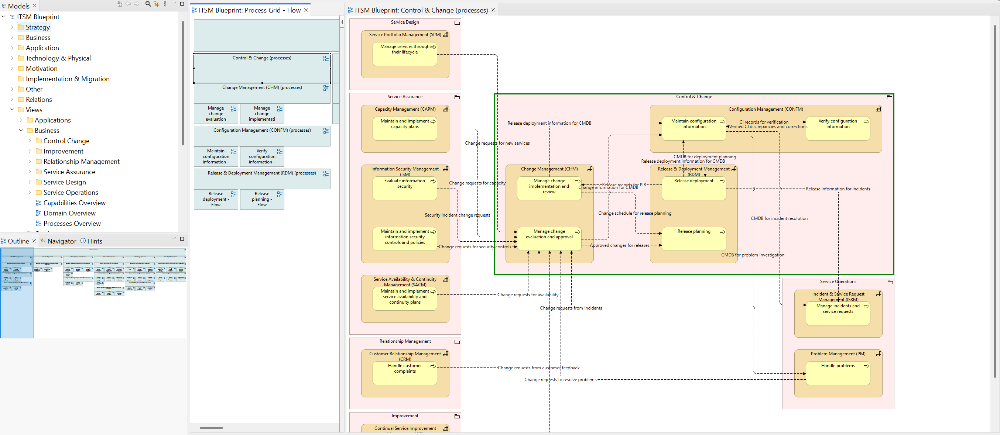
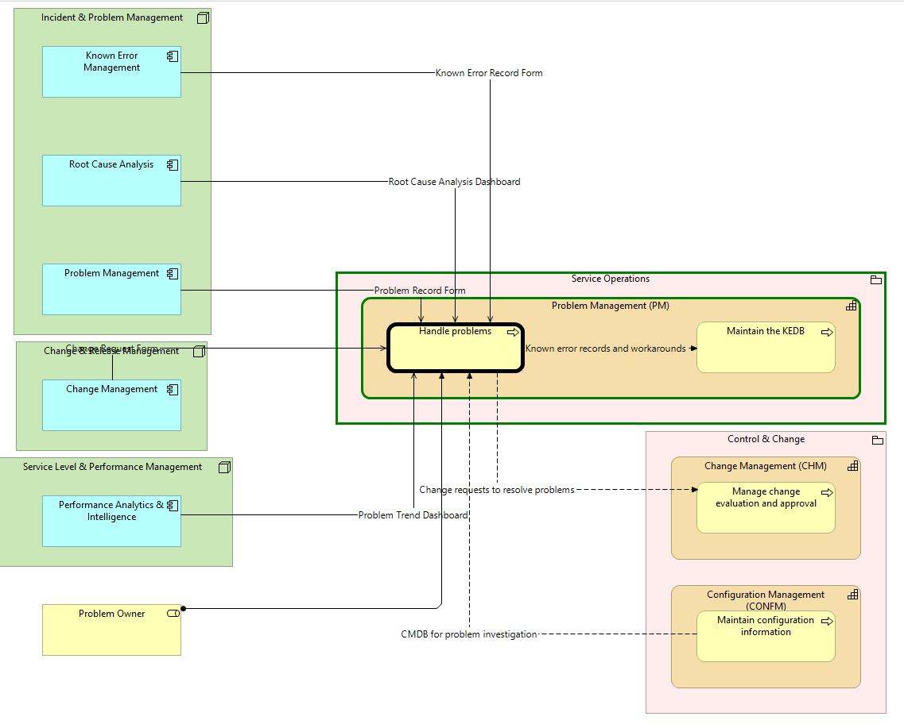
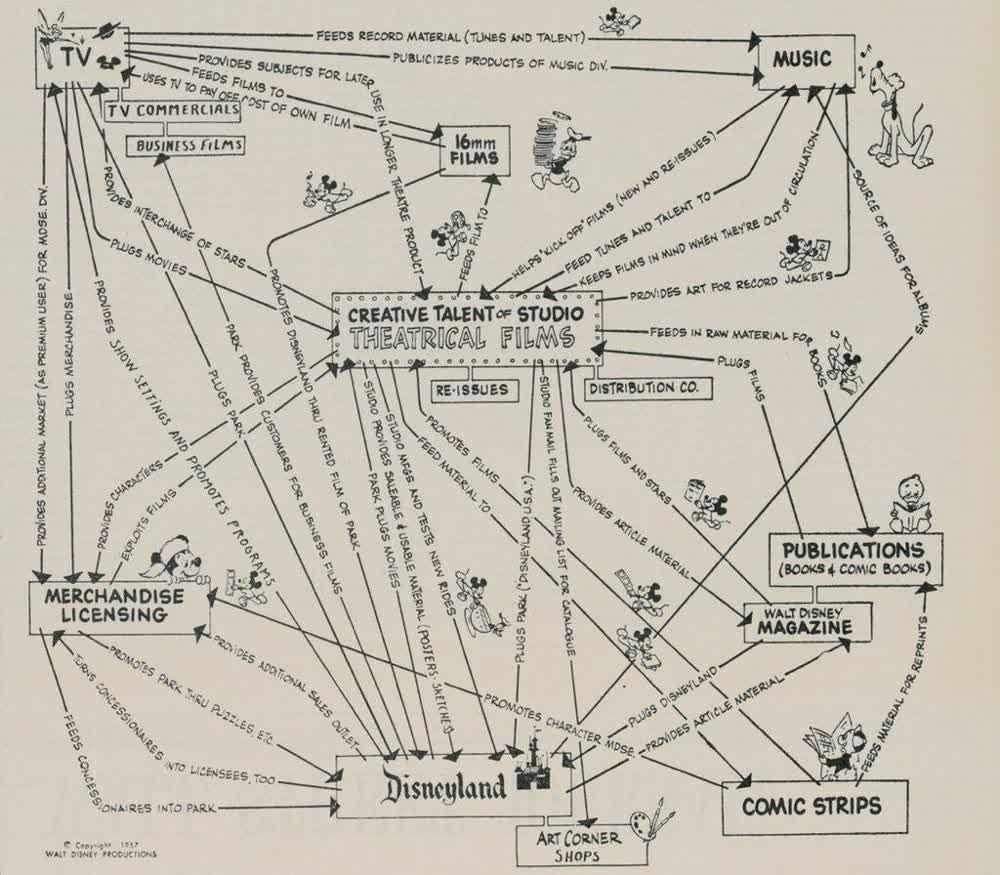
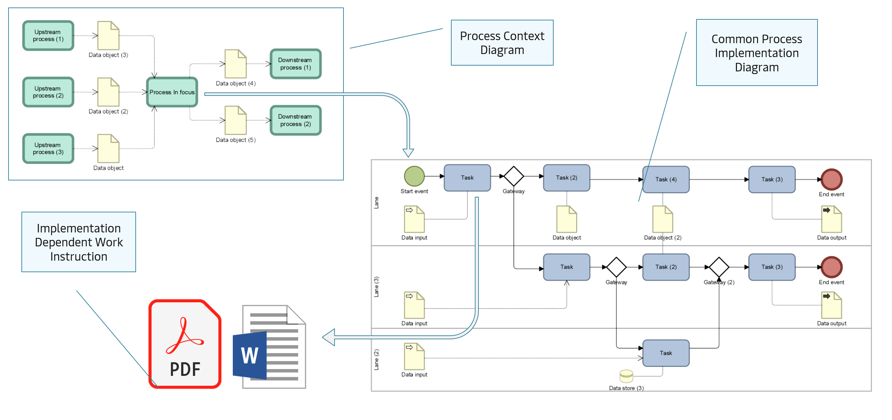
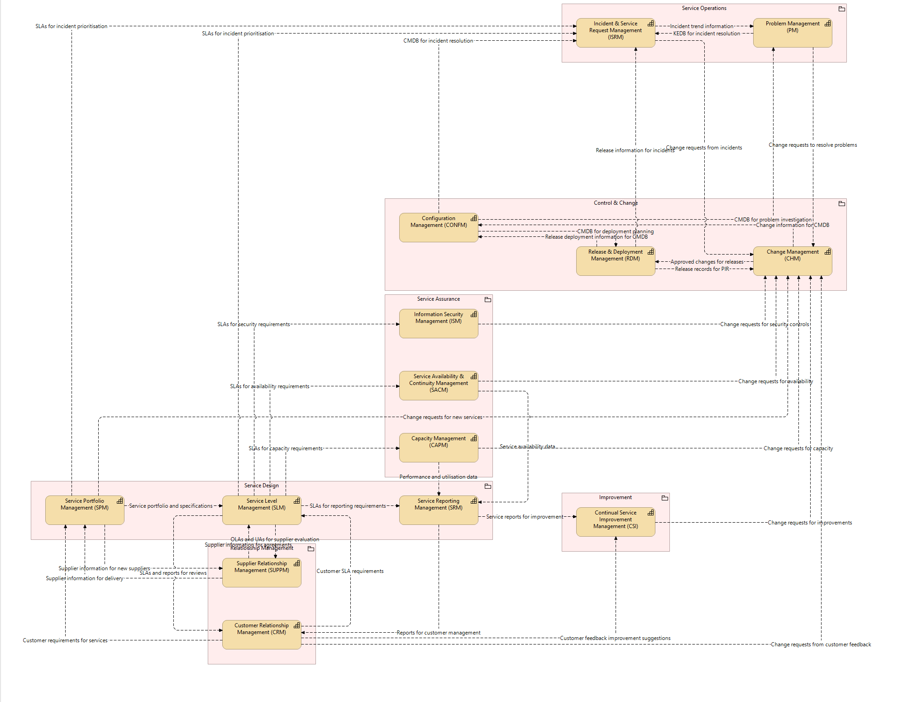
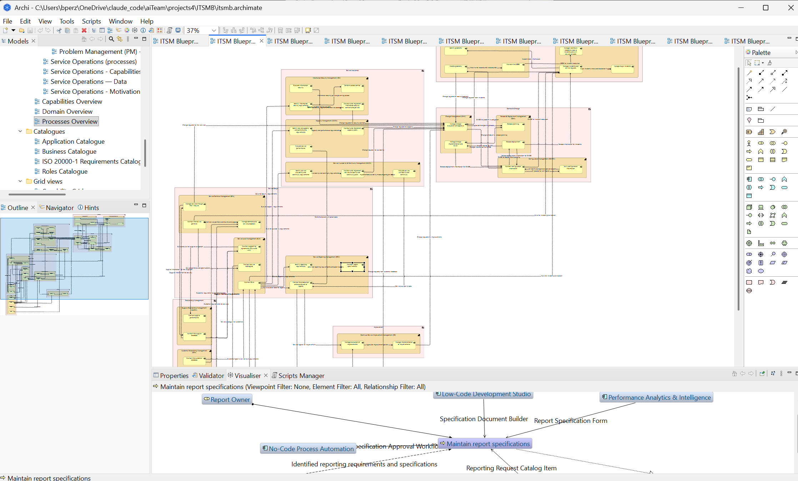

"A process is important because of what runs through it."
In 2016 I was working at Walgreens Boots Alliance, near London. I had been brought in as the expert on ARIS — the tool and the content — looking after a library of about five hundred documented processes. It was, by the standards of the discipline, a good library: three tidy levels, a team of some twenty business analysts drawing and maintaining the models, everything filed where it should be.
And it had a problem so common that almost nobody recognised it as a problem. Each process was documented as if it lived alone. Where one process ended and another began, the connection was vaguely understood — people knew, roughly, that "this goes to finance next" — but the formal side of it was not truly executed. The processes were locally correct and collectively meaningless. Five hundred well-drawn rooms; no map of the building.
Fixing that took the better part of a year. A colleague of mine went from process to process, checking that the event ending one process really was the event beginning another, talking to the people who did the work, untangling a confusion I have seen in every organisation since: analysts mistaking the mechanism for the message. I remember it vividly, because the same sentence appeared in two dozen processes if not more: "…and then this goes to the radio" — the warehouse radio network, dutifully documented as the next step. It took a while to explain that yes, it goes to the radio, but the point is what goes to the radio — the message, not the medium. I remember the blank stares. And then, slowly, the understanding arriving in people's eyes: in process communication, it is always the message, never the mechanism.
When the connections were finally trustworthy, I did something the tool was never really designed for. I extracted the whole thing — the processes, still held inside their family groups, and every handover between them — into plain tables. And I fed those tables to a free graph-visualisation tool, which computed the layout and drew, in seconds, the interaction network of half the business.

The first-map moment: a full generated process network, dense, clustered in its groups.
I had never seen a picture like it. Nobody had ever seen a picture like it — not of that business and, I would slowly come to understand, not of almost any business. It was the map of what the organisation actually was. And it had cost a year of making the data true, one afternoon of extraction, and no manual drawing at all. Not a single mouse click.
The first thing the picture did was embarrass the data. Orphan processes — connected to nothing — stood out instantly. Processes with inputs and no outputs. Outputs and no inputs. Hubs quietly receiving from everywhere, which no status report had ever called critical. You could see the errors because you could see everything; a generated picture is the fastest error-detector I have ever used, and I have used it that way ever since. The data must be made true before the picture can be — and the picture is what shows you where the data lies. Those two sentences chase each other in a loop, and the loop is the method.
We have all heard the words "I don't know what I don't know." Standing in front of that picture, I understood the sentence for the first time in my professional life: the map was showing me, precisely and all at once, what I did not know. The impact of that was profound, and it has never fully worn off.
But the discovery — the one this essay exists to record — came from looking at the lines themselves.
Some connections joined processes inside the same capability: local traffic, one manager's world. Village roads. Some crossed from one capability into another: coordination between neighbouring parts of the business. A-roads. And some crossed the boundaries of entire domains — from supply chain into finance, from operations into commercial. Motorways. The traffic of the whole organisation runs across those few lines. If a village road fails, a team has a bad week. If a motorway fails, the business stops.
I remember the image that came to me, unbidden, and stayed for years: one of those maps of the world with airline routes arcing between cities. The neighbouring parts of the business were countries; the major components were continents; and the long lines between them carried everything that mattered. Now I have a world map of this business, I said to myself. I have wanted one for every business since.

An airline route map — pure impact, zero notation.
And that image holds the essay's quiet prerequisite — the one everything else stands on. An airline map only means something because the world map beneath it came first: cities inside countries, countries inside continents. It is the grouping that makes a route local or intercontinental; without the borders, the routes are just lines. A business is the same, with one hard difference: its world map — processes inside capabilities, capabilities inside domains — is not given by geography. It has to be drawn first, and unlike the continents, it moves. Every grade above is defined by those borders: a motorway is a motorway because it crosses one. Record the hierarchy first; lay the connections out within their groups; only then do the grades appear — and everything that follows in this essay, the blast radius included, depends on that. No groups, no grades. Just spaghetti.

The business world map — domain clusters as continents, capabilities as countries, processes as cities, motorways as long arcing routes.
Here is what that means, and it is the single most useful sentence I can offer anyone who runs or studies an organisation: a process is not important because of its name, its owner, or the size of its box on a chart. It is important because of what runs through it. No process list will tell you that. No org chart will tell you that. Only the graded map of the connections tells you that — and until the connections are recorded and made true, that map cannot exist.
There is a TED talk by an ecologist, Eric Berlow, that I have carried with me for years. He takes a famously mocked "spaghetti" diagram of a war strategy and shows that when you stop flinching from complexity and step far enough back to see the whole network, the answers get simpler — and they are often different answers than the ones you started with. That is precisely what the map did. Embracing the full tangle of five hundred processes made the important things obvious.
For years I could show the map and grade the roads. It took me longer to say plainly what the roads are. Here it is: a connection between two processes is the transfer of a business object. An order. An invoice. A test result. A change request. Is that the whole truth? I will say it the honest way: it is the most useful approximation I have found in four decades of looking — when a process hands over to another process, what actually moves is a thing the business cares about, and everything else — the emails, the systems, the meetings — is merely the vehicle.
Medicine has been here before us. For fourteen centuries, physicians knew the anatomy — the organs, beautifully drawn — and taught that the body ran on four humours. It took Ibn al-Nafis in the thirteenth century, and William Harvey four hundred years later, to establish the thing the drawings could not show: the blood circulates. One connected system; the heart a pump; the vessels carrying something, everywhere, all the time. Anatomy describes the parts. Circulation explains the life.

The same model twice — anatomy alone, then circulation over it.
Business architecture, as a field, stopped at anatomy. The capability map is our anatomical drawing — and I want to say clearly that it is genuinely useful; I have built and used them for decades. But I must also say what I have found in those same decades: almost every capability framework in existence — public or private — contains no interactions at all. SCOR is the honourable, rare exception, and its rarity proves the rule. For the rest: not simplified interactions — none. And their owners do not know that the interactions must be sought, or at which level, or what they would mean. The thing the organisation actually runs on — its circulation — is written down nowhere. It is the dark matter of every enterprise: its effects visible everywhere, in every delay and every mysterious failure, the thing itself recorded in no document, no framework, no tool.
Processes are the organs. Business objects are the blood. Flows are the vessels, and the motorways are the arteries. I did not set out to build a better anatomy. I found how to represent the circulation.
And once the circulation is visible, one more thing becomes computable that I have rarely — perhaps never — seen articulated: the blast radius of a change. Those boundary-crossing jumps are exactly what define it. Change one process, and the map will show you — not estimate, show you — how far the shock travels: which neighbouring processes feel it, which capability boundaries it crosses, and whether it reaches a motorway. I can draw the whole system, and I can draw the blast radius of a single process change. I will not claim nobody has ever thought of this; I will say that in four decades I have not seen it drawn.

One process highlighted; its blast radius propagating across capability and domain boundaries.
Everything above depends on one working rule, and it is the rule my whole method stands on: the diagram is never drawn. It is generated from the data — every time, at any moment, as current as the data itself.
A drawn diagram is testimony: one person's recollection of the business, frozen on the day it was drawn, aging from that moment. A generated diagram is evidence: a projection of recorded facts, and when a fact is wrong the picture exposes it rather than hiding it under good graphic design. This is not an aesthetic preference. At any real scale it is a necessity, and you can verify it yourself: a complete model of even a modest organisation produces a hundred views or more. Regenerate the whole model tomorrow — after a reorganisation, after an acquisition, after a single new capability — and the views regenerate with it. No team of humans can redraw a hundred coherent diagrams every time reality moves. These pictures cannot be made by hand. That is not a limitation of the method; it is the proof of it.
In 1957, Walt Disney's studio drew — by hand, once — the most famous business diagram ever made: the synergy map, every part of the Disney business feeding every other, a hand-drawn picture of a company's circulation. People have admired it for almost seventy years, and I have never met anyone who had one of their own business. If you have ever wondered why: it was never a drawing problem. It was a data problem, and then a generation problem. Disney drew it once. Today, it can be generated — graded, current, and true — for any organisation willing to make its connections honest.

Disney drew it once, by hand, in 1957.
Once you accept that flows carry business objects, something quietly enormous follows: the map of flows implies the data model of the business. List everything that travels the roads — every order, invoice, result, request — and you are holding the business object model: the very thing that every application, every database, every integration in the company is downstream custodian of. Data architects spend months reverse-engineering this from application databases, bottom-up, polluted by decades of implementation accidents. It was implied, top-down, by the business itself, all along.
And it goes one step further, into the language of the process professionals I spent the first part of my career among. Because the architecture records who does what, what is handed over, and to whom, the same network can be projected into their notation — and when it is, the data objects feeding and leaving each process step are not decorations. They are things of reality, drawn from the business object catalogue. Which establishes a rule you can audit, process by process: which objects does this process demonstrably handle — and which of them do the systems underneath it not even know about? I have watched that one question expose more quiet risk than a year of workshops.

Same reality, two languages.
A reference model, in my experience, has one honest problem: it is almost always larger than you need — at least initially. This is especially true for small and mid-sized organisations, who look at an enterprise framework the way a normal family looks at an aircraft carrier.
So I will end with the opposite of a sales pitch. There is another talk that shaped this work — Kirby Ferguson's Embrace the Remix: everything creative is copy, transform, combine, and admitting it is liberating. That honesty applies to me as much as anyone: much of what I describe here has ancestors in early modelling approaches — IDEF0 among them — that simply never had the good fortune of existing alongside a well-formulated architecture language; standing on a modern method is part of why this works at all. And in the same spirit, for you: adoption is not always building on top. More often than not, adoption is reduction. Take a complete model and remove, in a controlled way, everything that is not you — until the map is the shape of your business and nothing more. The structure holds while you cut, because the connections tell you what you are cutting through. Going back to Embrace the Remix: this is the song I am giving you. Make it yours.
The first complete specimen is nearly ready for the world. It is an IT Service Management Blueprint — ITSMB — a full operating model: domains, capabilities, processes, roles, motivation, applications, data; every view generated, every connection recorded. The pictures in this essay are from it. It will be released soon, free to browse, with nothing behind a curtain.


From the IT Service Management Blueprint, releasing soon.
Look at it, when it arrives, the way I looked at that first map in 2016: not as documentation, but as a picture of how a business actually holds together. Find the motorways.
Then ask what your own world map would show.
Eric Berlow — Simplifying complexity
ted.com/talks/eric_berlow_simplifying_complexity
An ecologist showed me, years ago, what I later found to be true of every business I mapped: complexity is not the enemy of understanding — it is the doorway to it. Berlow takes a war-strategy diagram everyone mocked as unreadable spaghetti and shows that when you embrace the whole network instead of flinching from it — when you step back far enough to see every node and every line — the answers become simpler, not harder. And they are often different answers than the ones you started with. That is exactly what happened the first time I saw an organization's process network drawn whole: the picture nobody had ever seen made the important things obvious. His closing words I will simply borrow, because I cannot improve them: the more you step back and embrace complexity, the better chance you have of finding simple answers — and they're often different from the simple answer you started with.
Kirby Ferguson — Embrace the remix
ted.com/talks/kirby_ferguson_embrace_the_remix
Ferguson's argument is that everything creative is copy, transform, combine — that "original" work is remix wearing a suit, and that admitting this is liberating, not diminishing. This is precisely the spirit in which I publish these models. A reference framework is not a monument to be admired or a cathedral to build additions onto; for most organizations — especially smaller ones — it is larger than you need. Making it yours means reducing it, in a controlled way, until it is the shape of your business and nothing more. So take these models as Ferguson takes a song: this is the song I am giving you. Make it yours.
Forty years in enterprise architecture and business process work — Vodafone, Walgreens Boots Alliance, Maersk, KPMG among them. Today I build and publish reference operating models, generated rather than drawn, and I help organisations make them their own.